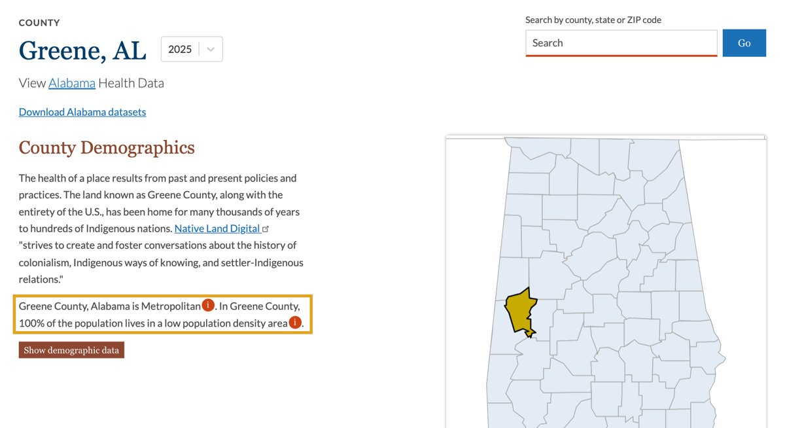

Watch first: What to expect
Read the transcript
Let's start with a question.
Here is a county in Alabama. Greene County. Fewer than 8,000 people, spread across more than 600 square miles. Is it rural?
The US Census Bureau says yes. Every resident lives in an area it classifies as rural.
The federal list of metro areas says no. It counts Greene County as metropolitan, because of its commuting ties to a nearby city. Same county. Two official answers. Neither one is a mistake.
One public website even states both facts, one sentence apart.
Now imagine combining health records, air quality, income, and hospital data, when we can't even agree on the word rural. That is what this tutorial is about: how to organize rural health data, and how to combine it.
People have worked on rural health for more than thirty years, with serious money behind them, and the gaps are still there. That's why some people call it the hard problem. It's worth your time, because the people who live there deserve better, and because a solution that works in a rural place usually improves health care everywhere.
You don't need any background to start. If you code, you'll see how joining two tables perfectly can still give a wrong answer. If you know health care, you'll see what the numbers leave out. If you think about business, you'll see how weak data can lead to a bad bet on a clinic. If you know communities, you'll see who the records never reach. And if you're simply curious, you'll learn to question any number. Good teams need all of you.
In about 25 minutes, we'll cover four things. Why rural data behaves differently. Five questions to ask any dataset. Free tools that combine health and environmental data. And how to use AI for this work without getting fooled.
Each part has a short video, a short reading, and a quick quiz. Let's begin.
Start with a question
Is Greene County, Alabama, rural?
Fewer than 8,000 people live there, spread across more than 600 square miles. Here is what two official sources say.
US Census Bureau
100% rural. It looks at how densely an area is settled.
Federal metro area list
Metropolitan. It looks at commuting ties between counties.
Same county. Two official answers. Neither one is a mistake.
Four questions we'll explore
What makes rural data different?
What should you pay attention to when you organize it?
Which free tools can combine health and environmental data?
How can AI help, without fooling you?
Each part has a short video, a few short screens, and a quick quiz.
Why this is worth your time
The hard problem
People have worked on rural health for more than thirty years, and the gaps are still there. It's worth your time, because the people who live there deserve better, and because a solution that works in a rural place usually improves health care everywhere.
No background needed
If you code
You'll see how joining two tables perfectly can still give a wrong answer.
If you know health care
You'll see what the numbers leave out.
If you think about business
You'll see how weak data can lead to a bad bet on a clinic.
If you know communities
You'll see who the records never reach.
If you're simply curious
You'll learn to question any number.
Good teams need all of you.
Watch first: Why rural data is different
Read the transcript
Part one. Why rural data is different.
Here's a real puzzle from rural Alabama. A study published in 2017 reported that 19 of 55 stool samples from Lowndes County tested positive for hookworm DNA. Hookworm is a parasite of poor sanitation that many people assume the United States left behind. A larger study, published in 2023, tested stool from 704 children in the same region and found none. Two careful studies, two different answers.
Why the difference? The first study went to homes chosen for poor sanitation and used a very sensitive test. The second tested children across the region. But both found the same problem underneath. About four in ten people in the first study reported raw sewage exposure at home. In the second, 12 percent of children lived in homes that discharge untreated wastewater.
The area's clay soil drains poorly, so septic systems often fail, and a system that works can cost more than many families can afford. A clinic's records could never show you that. You'd need health, environmental, and community data, kept by organizations that rarely work together. And you'd need local people. A community group helped run the first study. People who live there know things records don't.
Two words describe this work. Curation means keeping each piece of data labeled and honest, like a museum curator writing the card beside an object: what it is, where it came from, and when. Integration means lining up data from different sources, so they describe the same place and time.
All health data needs that care. So what makes rural data different? Three things.
First, small numbers. Greene County has about 7,000 people. In a place that size, a handful of events can change a rate a lot. Official systems also hide small counts to protect privacy. A death-records database from the US Centers for Disease Control and Prevention, the CDC, hides local counts under ten, and you'll see the word suppressed instead.
Second, thin coverage. We counted the US Environmental Protection Agency's list of monitors for fine particle pollution, the tiny specks in the air that can get deep into the lungs. More than one in three metro counties has an active monitor. Outside metro areas, it's about one in eleven. Greene County isn't on the list, so any air number for it has to be an estimate.
Third, people cross county lines. In one report on eight states, using 2018 data, 30 percent of hospital stays for rural patients were away from their local hospital, for care it could have provided. So a county's clinic records don't describe that county's people, and a needed clinic can look unneeded.
Why does this matter now? Since 2005, at least 197 rural hospitals have closed or stopped offering hospital stays. For working-age adults, the death rate from disease outside metro areas was 6 percent above metro areas in 1999, and 43 percent above them in 2019. And a new federal program is sending 50 billion dollars to states over five years. Those decisions need careful evidence.
Here's the good part. People in these places deserve honest numbers, and you can help. If you learn to read small numbers honestly here, you can read them anywhere: a small city neighborhood, a rare disease, a single clinic. Next, how to question a dataset.
Two words, three differences
Two words to know
Curation
Keeping each piece of data labeled and honest, like a museum curator writing the card beside an object: what it is, where it came from, and when.
Integration
Lining up data from different sources, so they describe the same place and time.
What makes rural data different?
In a place with about 7,000 people, a handful of events can change a rate a lot. Official systems also hide small counts to protect privacy, so you may see the word suppressed where a number should be.
More than one in three metro counties has an active monitor for fine particle pollution (tiny specks in the air). Outside metro areas, it's about one in eleven. Without a local monitor, any air number has to be an estimate.
In one report on eight states, using 2018 data, 30 percent of hospital stays for rural patients were away from their local hospital, for care it could have provided. So a county's clinic records don't describe that county's people, and a needed clinic can look unneeded.
Records aren't the whole story
A clinic's records could never explain the sewage problem in the video. That took health, environmental, and community data, and local people. A community group helped run the first of the two studies. People who live there know things records don't.
What does “rural” mean?
Rural health is the health and care of people who live in places with few residents, long distances, and few local services. About one in five Americans lives in an area the Census Bureau calls rural. Those places differ widely, so a fix that works in one may not work in another.
There is no single definition
| Who defines it | What it looks at | Greene County comes out as |
|---|---|---|
| US Census Bureau | How densely an area is settled | 100 percent rural |
| Federal list of metropolitan areas | Whole counties and commuting | Metropolitan |
| US Department of Agriculture commuting codes | Commuting in smaller areas inside a county | Parts are metropolitan, small town, and rural |
The rule
None of these is wrong. Each was built for a different job. A widely cited 2005 paper warned that different definitions can lead to markedly different conclusions. So pick the definition that fits your question, and write it down.
Try it: Look up a county
A quick look
Open County Health Rankings.
Search for a county you care about.
Ask yourself: would the people who live there call it rural?
Here's the page for Greene County

What does a missing monitor tell you?
What does “Suppressed” mean?
Why those answers matter
A gap in the data is not an answer
The key idea
A missing monitor tells you an air number is an estimate. “Suppressed” tells you a count was small and hidden. Neither one tells you the air is clean or the count is zero.
Why it's worth getting right
People in these places deserve honest numbers, and you can help.
Where else this helps
If you learn to read small numbers honestly here, you can read them anywhere: a small city neighborhood, a rare disease, a single clinic.
Watch first: Five questions to ask any dataset
Read the transcript
Part two. Five questions to ask any dataset.
In October 2020, England's public health agency found that nearly 16,000 positive COVID tests had been left out of its daily counts. There was no hacker. News reports traced the problem to an old spreadsheet format that ran out of rows. Contact tracing for those cases was delayed.
Most data problems are this ordinary, and the fix is a habit. When a patient arrives, a doctor takes a history before deciding anything. You can do the same with a dataset. Ask it five questions.
Question one: where? What place does this number describe? A county, a ZIP code, the patient's home, or the clinic's address? Someone may live in one county and get care in another. Which county gets counted? If you're deciding where a clinic should go, that answer changes everything.
Question two: when? How many people live in Greene County? Here are four official answers. 7,730 in the 2020 census. 7,706 from a survey that combines five years of answers. 7,317 estimated for 2023. And 7,067 estimated for 2025. All correct. Each one answers a different when.
Question three: what, exactly? What share of adults in Greene County have diabetes? One CDC table says 27 percent. The same table also says 21. CDC's previous release says 19. Twenty-seven is the plain share of adults. Twenty-one adjusts for age, so an older county can be compared fairly with a younger one. Nineteen is the age-adjusted figure from the year before. One disease, three honest numbers. Always read the definition.
Question four: how sure? Almost every number here is an estimate, and estimates have ranges. In Jefferson County, 6.9 percent of households have no car, give or take 0.4. In Greene County, it's 13.2 percent, give or take 4.9. The true figure could be about 8, or about 18. Report the range, and you're being honest about what you know.
Question five: who's missing? A blank doesn't mean zero. No air monitor doesn't mean clean air. No clinic visit doesn't mean no illness. People without a car, insurance, or internet are often the hardest to find in records, and the people who live there often know what the records miss. So ask them. And in a place this small, a small number can point to a real neighbor. Handle it with care.
Where. When. What. How sure. Who's missing. Write your answers on a one-page Source Card, one for each dataset. It takes a few minutes, and your teammates will thank you. That's data curation, and it needs no code. Next, the tools.
Take a history of your data
When a patient arrives, a doctor takes a history before deciding anything. You can do the same with a dataset. Curation sounds technical, but it mostly means keeping good notes.
Open each question
What place does this number describe? County, ZIP code, patient's home, or clinic's address?
Why it's harder in rural places. People often live in one county and get care in another. One ZIP code can cover a wide area.
What to look for in the documentation. “Geography” or “geographic level”
What year does the data describe? That can differ from the year it was released.
Why it's harder in rural places. The Census Bureau publishes full one-year survey estimates only for areas of 65,000 people or more. Most rural counties get five-year estimates.
What to look for in the documentation. “Data year,” which can differ from the release year
What exactly is being counted? Is it measured, from a survey, or modeled?
Why it's harder in rural places. Words like visit, uninsured, and access can change meaning between sources.
What to look for in the documentation. “Definition” or “data dictionary”
What is the margin of error? Are any values hidden?
Why it's harder in rural places. Fewer people means wider margins of error and more hidden values.
What to look for in the documentation. “Margin of error” or “confidence interval” (both give a likely range), and “suppressed”
Who is not in this data? Does a blank mean zero or unknown?
Why it's harder in rural places. There are fewer monitors and fewer survey responses, and no record of people who never reached care.
What to look for in the documentation. “Coverage” or “limitations”
The answers are usually in a page called “documentation,” “methods,” or “technical notes.”
What kind of number do you have?
Three kinds of numbers
Measured
Comes from a monitor or an actual count.
Survey
Comes from a sample of people who answered questions.
Modeled
Calculated from other data.
All three are useful, and in small places many numbers are modeled. Label which one you have.
Keep one Source Card per dataset
Write your answers on a one-page Source Card, one for each dataset. It takes a few minutes, and your teammates will thank you. That's data curation, and it needs no code.
A finished example
| Source Card | CDC PLACES, 2025 release, diabetes among adults |
|---|---|
| Where | County: Greene, Alabama |
| When | 2023 data, released in 2025 |
| What | Share of adults with diagnosed diabetes, age-adjusted, modeled from a phone survey |
| How sure | 21.1%, likely range 18.5% to 23.7% |
| Who's missing | Phone surveys can miss people without a reliable phone |
The Field Guide has a blank card you can copy.
Download the Field Guide (PDF)Which question should you ask?
How sure is this number?
Why those answers matter
Read the date, and keep the range
The key idea
The year a report comes out often differs from the year its data describes. A range tells you how sure a number is. Report both, and you're being honest about what you know.
Watch first: Free tools that combine health and environmental data
Read the transcript
Part three. Free tools that combine health and environmental data.
Here's the good news. People have already combined a lot of this data and put it online for free. You have three options. Look it up. Download a table someone else combined. Or combine it yourself.
Level one: look it up. County Health Rankings and Roadmaps gives every US county its own page. Health, income, housing, and the environment appear together, with the years the data covers. Use it when you want to get to know a place fast. To access it, go to County Health Rankings dot org and search for a county.
Data Commons, from Google, is like a search engine for public statistics. Type a place and a topic, and you'll see charts from many agencies, with the source listed. Use it when you don't know where a number lives.
Level two: download a combined table. The Environmental Justice Index, from the CDC, ranks every census tract, which is a small area of about 4,000 people, on 36 environmental, social, and health factors. Use it when you want health and environment in one file. To access it, open the index's explorer map, or its data download page.
The CDC's Environmental Public Health Tracking Network also puts air, water, and heat data beside health data. Use it to look at environment and health together. To access it, open its Data Explorer.
One warning. Government websites change. On February 5, 2025, the Environmental Protection Agency took its main public map of environmental risks, called EJScreen, offline. An outside group rebuilt a copy. So download what you use, and write down the date.
Level three: combine it yourself. All you need is two tables and one column they share, usually a county ID number called a FIPS code. In Excel or Google Sheets, one formula called XLOOKUP does the work. For each county in your first table, it finds the matching row in the second. Then check. Do you still have the same number of counties? Did anything come back not found?
Here's a trap that catches almost everyone. Greene County's FIPS code is 01063. Open that file in a spreadsheet and the first zero can vanish. Now it matches nothing. Counties in seven states have this problem, from Alabama to Connecticut. So format that column as text before you paste.
Here's a small combined table for two Alabama counties. Diabetes from one source. Fine particle pollution from another. Households with no car from a third. See the labels: the year, and whether each number comes from a survey or is calculated by a model. Without them, this is just a pile of numbers. Notice something else. Greene County has less fine particle pollution by this estimate, and more diabetes. A combined table shows a pattern. It doesn't explain it. Understanding the sewage problem in Lowndes County took lab tests, soil facts, and residents describing their homes.
You don't need all of these. Pick the one that answers your question. The Field Guide lists them all, with links. Next: how AI can help.
Three ways in
People have already combined a lot of this data and put it online for free. Start with the question you want to answer, then pick the easiest tool that can answer it.
Look it up. Search a place and read the numbers. No download.
Download a combined table. Get one file that someone else has already combined.
Combine it yourself. Join two tables on one column they share. No coding needed.
Websites change
The Environmental Protection Agency's EJScreen map went offline on February 5, 2025, and an outside group rebuilt a copy. So download what you use, and write down the date.
Six tools to know first
Look it up
County Health Rankings & Roadmaps
What it is. One page per county covering health, income, housing, and environment.
Why you might need it. To get to know a place quickly.
How to access it. Search by county; state data files can be downloaded.
Data Commons
What it is. A search engine for public statistics from many agencies.
Why you might need it. When you don't know where a number lives.
How to access it. Type a place and topic.
Download a combined table
Environmental Justice Index
What it is. Ranks census tracts on 36 environmental, social, and health factors.
Why you might need it. To get health and environment in one file.
How to access it. Explorer map or download.
Social Vulnerability Index
What it is. Ranks areas on 16 census measures such as poverty and access to a car.
Why you might need it. To see which communities may need more support.
How to access it. Map and data files.
CDC PLACES
What it is. Local health estimates for counties, places, census tracts, and ZIP code areas.
Why you might need it. For a health number where no local survey exists.
How to access it. Map and data files.
Environmental Public Health Tracking Network
What it is. Air, water, and heat data alongside health data.
Why you might need it. To look at environment and health together.
How to access it. Data Explorer.
For a rural-specific view, the Rural Data Explorer maps metro and non-metro counties, nationally and state by state. The Field Guide lists more tools, including places to read deaths, air monitor, and census data at the source.
Download the Field Guide (PDF)Try it: Combine two tables
This one is optional. All you need is two tables and one column they share, usually a county ID number called a FIPS code. In Excel or Google Sheets, one formula called XLOOKUP does the work. For each county in your first table, it finds the matching row in the second.
Watch for the vanishing zero
Greene County's FIPS code
The same code after a spreadsheet drops the first zero. Now it matches nothing.
Counties in seven states have this problem, from Alabama to Connecticut. So format that column as text before you paste.
Then check
Do you still have the same number of counties?
Did anything come back not found?
Remember
A combined table shows a pattern. It doesn't explain it.
The Field Guide has the steps, or AI can write the formula for you (see Part 4). Help pages: Excel and Google Sheets.
Which tool fits?
Why did Alabama fail?
Why those answers matter
Use the easiest tool that answers your question
The key idea
You don't need all of these tools. Pick the one that answers your question. If you combine tables yourself, check the result, because one dropped zero can make a whole state come back not found.
Watch first: Using AI without getting fooled
Read the transcript
Part four. Using AI without getting fooled.
Give an AI assistant two spreadsheets and ask it to merge them. Seconds later, you'll have a clean table. It will look perfect. And it may have quietly lost a whole state.
Think of AI as a very fast intern. It has read a lot, and it has never visited the county. It's great for speed, and it needs someone checking its work. Here are four jobs it does well.
One: read the fine print. The notes that explain a dataset can run for many pages. Upload them to a tool that answers from your own sources, such as Gemini Notebook, which used to be called NotebookLM. Ask: how was this number calculated? What year is it from? Who's left out?
Two: match columns. Paste the column names and definitions from two tables. Ask which ones mean the same thing, and ask it to flag any that only look the same. In one clinic's system, the letter C might mean completed. In another's, canceled. A matching label isn't a matching meaning.
Three: write the formula. Ask for an XLOOKUP that joins two tables on FIPS code and keeps the leading zero. If you do code, ask for a short script, with every step explained in plain English.
Four: draft your Source Card. Give it the documentation and ask it to answer the five questions. Then you check each answer against the source.
Now the checks. Do these every time. Count: do you have the same number of rows before and after? Spot-check: pick three places and look them up by hand on the original website. Ask why: make it quote the source for any definition. If it can't, don't use it.
One hard rule. Never paste information about real patients into a public AI tool, meaning any free chatbot, or any tool your organization hasn't approved for patient data. In a small community, even a few details can identify someone. The public data in this tutorial is fine to use.
AI makes the work faster. You're still responsible for the result, so say how you used it. You now know why rural data is different, five questions to ask, where to find the tools, and how to use AI with care. Download the Field Guide, pick a county you care about, and fill in one Source Card. See you in the next tutorial.
Four jobs AI does well
Think of AI as a very fast intern. It has read a lot, and it has never visited the county. It's great for speed, and it needs someone checking its work.
Any general-purpose AI assistant can help. A tool that answers from documents you upload, such as Gemini Notebook (formerly NotebookLM), is especially useful for reading documentation.
Prompts you can copy
The notes that explain a dataset can run for many pages.
You are helping a beginner. Using only the attached document, tell me what place this data describes, what years it covers, how the main number is calculated, and who is left out. Quote the section for each answer. If the document doesn't say, answer “not stated.”
In one clinic's system, the letter C might mean completed. In another's, canceled. A matching label isn't a matching meaning.
Here are the column names and definitions from two public datasets. Tell me which columns can be matched, which only look similar, and what I should check before joining them. Don't guess at a definition I haven't given you.
If you do code, ask for a short script, with every step explained in plain English.
Write a Google Sheets formula that joins Table B onto Table A using a five-digit county FIPS code stored as text, keeping leading zeros. Explain each part in plain English, and give me two ways to check the result.
Give it the documentation and ask it to answer the five questions. Then you check each answer against the source.
Answer these from the document: Where? When? What? How sure? Who's missing? Write “not stated” if it doesn't say.
Three checks and one hard rule
Three checks, every time
Count
Do you have the same number of rows before and after?
Spot-check
Pick three places and look them up by hand on the original website.
Ask why
Make it quote the source for any definition. If it can't, don't use it.
AI tools can invent citations and definitions that sound right, so if you can't find it in the source, don't use it.
One hard rule
Never paste information about real patients into a public AI tool, even if you have removed the names. In a small community, a few details such as age, town, and diagnosis can be enough to identify someone. If you work with real patient data, ask whoever is responsible for that data which tools are approved.
The public data in this tutorial is fine to use.
Which is a real check?
May you paste it?
Why those answers matter
You're still responsible for the result
The key idea
AI makes the work faster. A real check doesn't rely on the AI or on how tidy a table looks. And in a small community, removing names isn't enough to protect people.
When you finish
Say how you used AI, so others can judge your work.
Your next step
One small habit
Download the Field Guide.
Pick a county you care about, and look it up on County Health Rankings.
Choose one number, and fill in a Source Card for it.
That single habit will make everything in the next tutorial, Rural Healthcare Sustainability Analysis, easier.
Download the Field Guide (PDF)Want to go deeper?
Why your definition of rural can change your conclusions.
How hidden small counts affect rural numbers, and a way to adjust.
The first hookworm study from Part 1.
The larger study from Part 1, which found no hookworm in stool samples.
How the rural death-rate gap grew over 20 years.
You finished Tutorial 2
You now know why rural data is different, five questions to ask, where to find the tools, and how to use AI with care.
Next in the series: Rural Healthcare Sustainability Analysis.